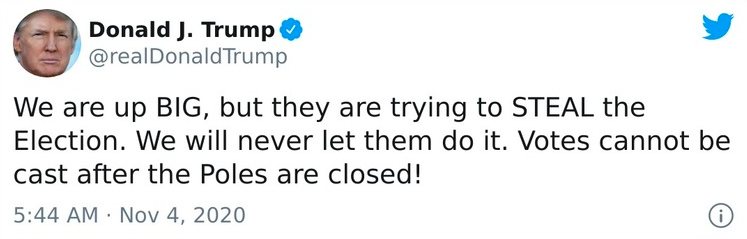
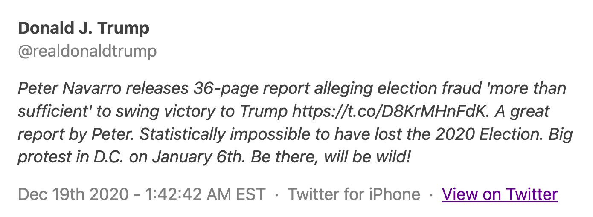
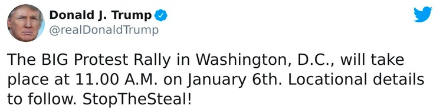

At 02:21 EST on election night, Donald
Trump declared his victory on a stage in the White House.
“We were getting ready to win this election. Frankly,
we did win this election.”
His speech came an hour after he tweeted
“they are trying to steal the election”
(Sardarizadeh, Lussenhop, 2021).
65 days later violence unfolded as rioters
stormed the US Capitol building.
Looking at Twitter, these tweets were the
warning signs leading up to the events that took place in
Washington on the 6th of January 2021.
Trump persistent Twitter usage took
influence over his supporters to lead them to take
action in Washington. In the graph below (right),
shows Trump’s tweets using the words ‘fraud, votes,
election, steal, win and #stopthesteal’ from October
2020 to January 6th 2021. The graph on the left shows Trump’s
tweets using the same words but from 3 months before
October 2020. As shown in both graphs the volume of
tweets using these words specific to the riots
become more prominent from the 4th of November.
This rise and popularity of using these words
helped influence his influers that their
election was being 'stolen', leading them
to demand action on the 6th of January 2021.
There was no single tweet which had caused
the Capitol riots, but a culmination of multiple tweets.
However this tweet on the 19th of December 2020 was the
starting point of Trump urging his followers to
take action. Had Trump's Twitter account been
suspended or banned during this time, he would
not have been given a platform to inform his
supporters of potenital riots and protests
taking place on the 6th of January.


On the 4th of November, a Trump supporter
released a video on Twitter with the "#stopthesteal",
becoming the first of many videos, images, and
tweets giving rise to this hashtag. The graph shows
the use and popularity of the hashtag up until the
riots on 6th January, with a sharp increase in the
days before. There was approximately 1.3
million tweets using #stopthesteal during this
time period. The data in the graph was sourced
from BBC and Kronos at https://www.bbc.com/news/world-us-canada-55592332
On the 6th of Janurary 2021,
Donald Trump addressed a crowd south of the
White House and encouraged his supporters to
"peacefully and patriotically make your voices
heard." However he also told his supporters to
"fight like hell, and if you don't fight
like hell, you're not going to have a country
anymore.” This was the last warning to the US
Capitol building before Trump and his supporters
were “going to walk down Pennsylvania Avenue…
and we're going to the Capitol" (Sardarizadeh,
Lussenhop, 2021). Hours after his speech Trump
tweeted, “Mike Pence didn’t have the courage”,
and at the same time Pence was evacuated from
the Capitol Building as the riots had already
started. The tweet on the right was Trump’s
final tweet on the evening of the 6th. He states
to “Remember this day forever”, ignoring the
violence that had just insured on the Capitol
Building and insinuating to his followers
that this day was a momentous day to
remember. Both of these tweets were deleted by Twitter
and Trump’s account was given a 12 hour
suspension (Hamilton, 2021). However, this was too late as
the damage was already done. Twitter had
also faced widespread pressure to
permanently ban Donald Trumps Twitter
account, which they did on the 8th of
Janurary 2021.